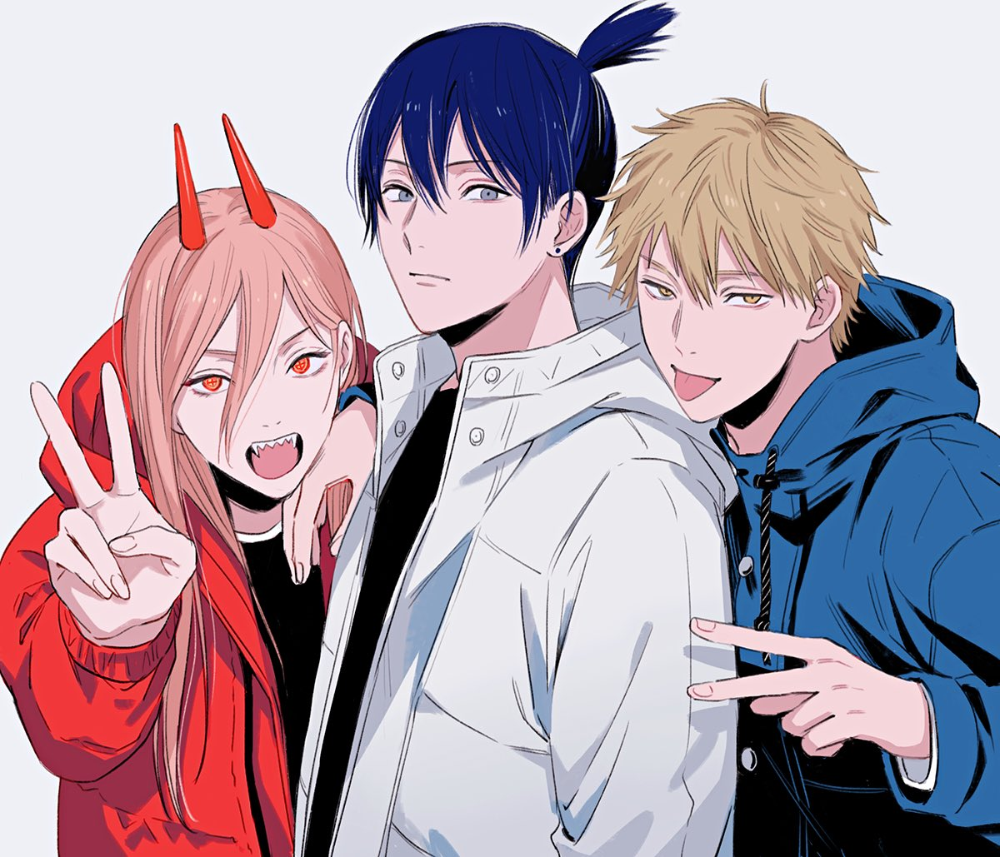
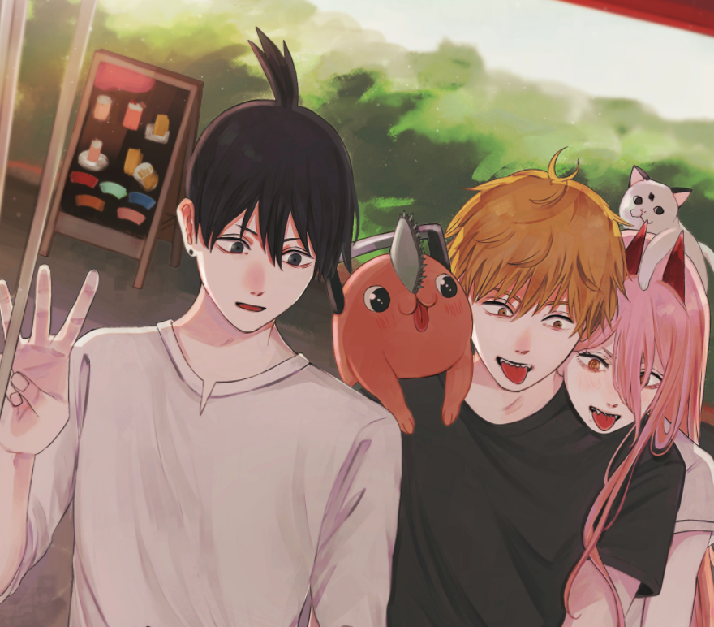
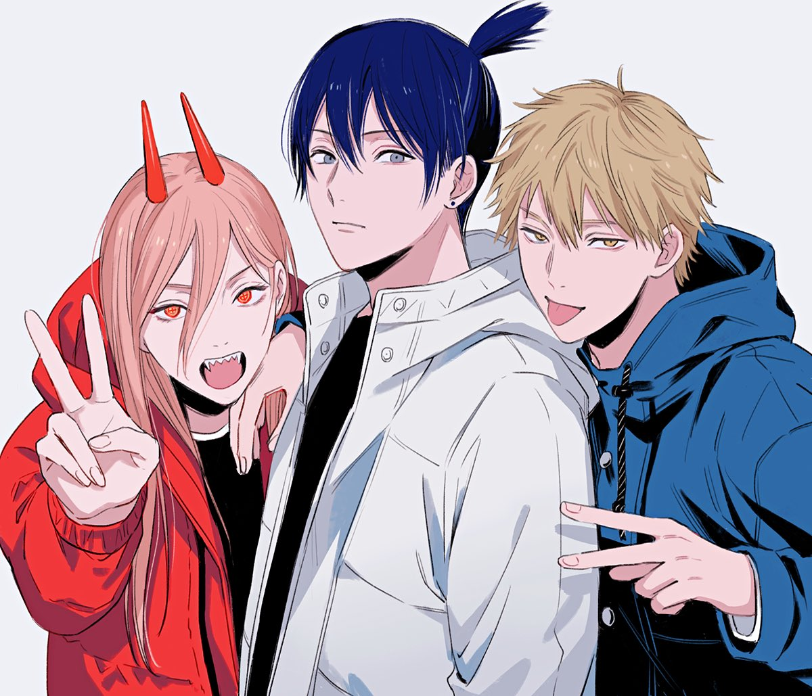
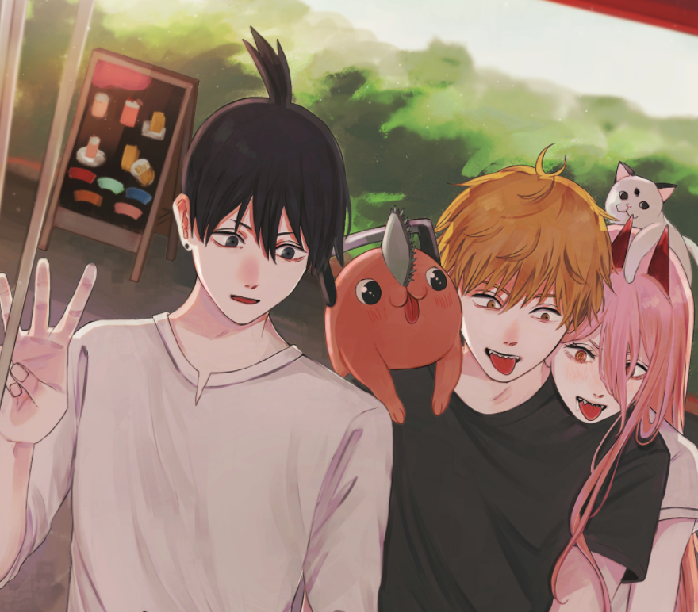
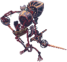
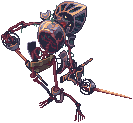
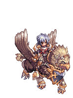
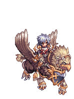

A história se passa em um mundo onde os demônios nascem dos medos humanos. Embora sejam
geralmente perigosos e malévolos, os humanos podem firmar contratos com demônios para usar uma parte de
seu
poder. Denji é um jovem deprimido que está tentando pagar a dívida de seu falecido pai com a yakuza
vendendo
vários de seus órgãos e trabalhando como caçador de demônios. Denji também possui um demônio parecido
com um
cachorro chamado Pochita, que se assemelha a uma motosserra e auxilia Denji em seu trabalho. Denji é
incumbido
pela Yakuza de matar um demônio, mas descobre uma trama da yakuza para deixar o demônio matá-lo em troca
de sua
ajuda. Denji é morto e Pochita gravemente ferido, mas os dois já haviam feito um acordo que permite a
Pochita se
fundir com Denji, revivendo-o como um híbrido humano-demônio com a habilidade de serra elétrica de
Pochita.
Denji mata o demônio que o matou e é abordado por uma equipe de caçadores de demônios do governo. Como
ele agora
se tornou parcialmente um demônio, um dos membros da equipe, Makima, convence Denji a se tornar parte de
sua
organização para evitar ser caçado por eles.


 





 



 
